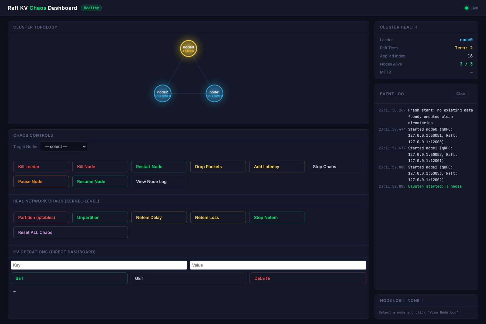
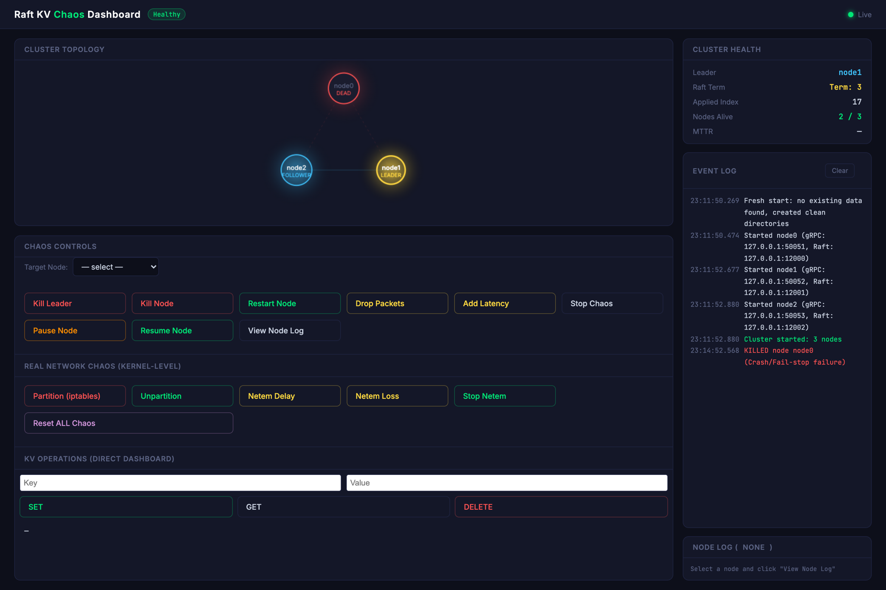
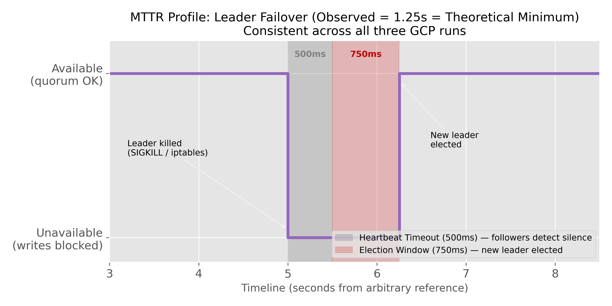
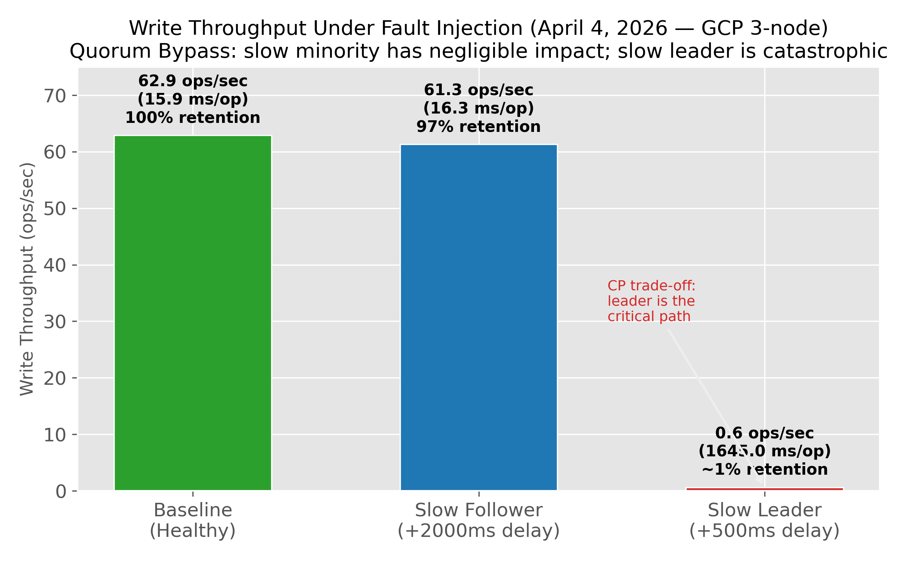
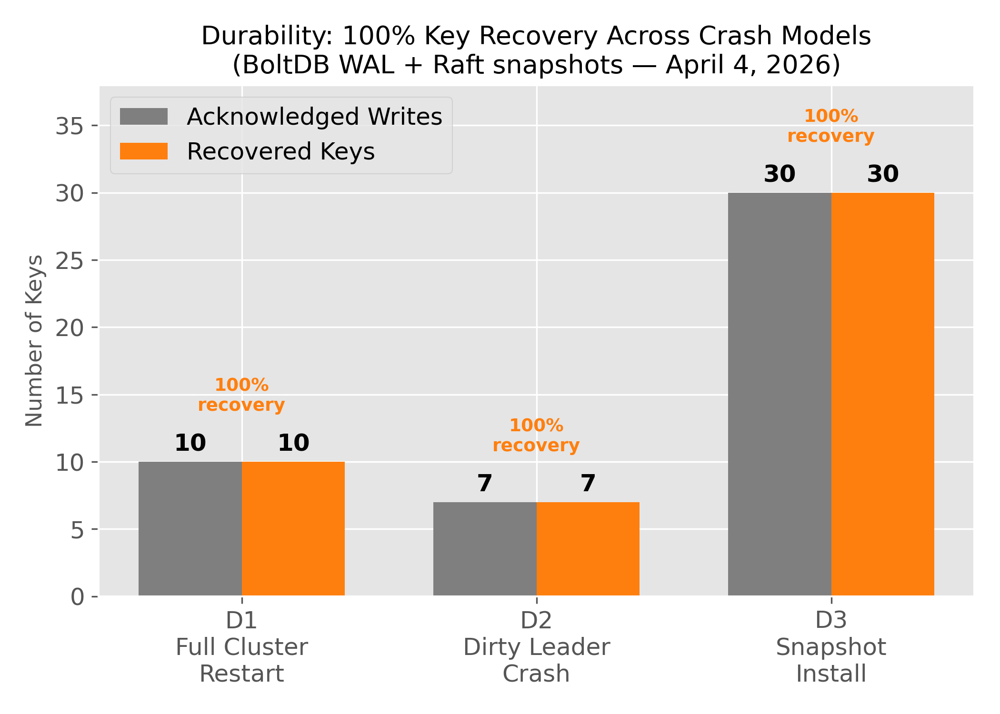

Fault-Tolerant Distributed Key-Value Store
A CP key-value store built on the Raft consensus algorithm in Go — deployed across Google Cloud VMs and verified under OS-level fault injection. Think of it as a small etcd: the same class of system that backs Kubernetes' control plane. The consensus mathematics come from HashiCorp Raft; everything that turns that library into a deployed, partition-tolerant service was built here.
OrientationStart here
This page is the full technical account of the system, written to be read straight through. Chapters 1–9 build up in order: the problem, the scope boundary, the architecture, how consensus works, how reads and writes flow, what happens when things break, how that was tested, what was measured, and what the results do not support.
New to distributed systems?
Read top to bottom. Concepts are introduced where they first matter, and the glossary collects every term.
Know Raft already?
Use the sidebar. Likely destinations: what was engineered, the quorum bypass, limitations.
Assessing the work?
Chapter 9 and
existing_issues.md
state plainly what these results do and do not support.
A key-value store is just a map — set("foo","bar"), get("foo") —
but running one copy is fragile, because if that machine dies the data is gone. So you run
several copies on different machines, which creates a new problem: keeping them in agreement
when machines crash and networks fail. Raft is the algorithm that solves
that: one node is elected leader, every change becomes an ordered entry in a replicated log,
and an entry only counts once a majority of nodes have stored it on disk. This system
implements that as five Go programs across a cluster of Google Cloud VMs, then attacks itself
— killing processes, freezing them, and severing the network with kernel firewall rules — to
check the guarantees actually hold. The headline result is that under a network split the
minority side stops serving rather than returning data it can no longer prove is
current, and a killed leader is replaced in roughly a second with no acknowledged write lost.
This is coursework, verified empirically rather than formally. Figures come from GCP runs in
early April 2026 and are honest, but the harness has real measurement limits — documented in
Chapter 9 and itemised in
existing_issues.md.
Where a number is an estimate rather than a measurement, this page says so.
Chapter 1The problem
Why replicating data is easy and agreeing on it is hard.
When the network splits
Run one copy of a database and a single machine failure loses everything. The obvious fix is to run several copies. But the moment there is more than one copy, they can disagree — and the network is what makes them disagree, because a network can fail in a way that is far nastier than a machine failing.
A crashed machine is honest: it serves nothing, and everyone can see it is gone. A network partition is not. It severs the cluster into groups that can each still talk internally, and each group cannot tell whether the others are dead or merely unreachable. If both groups keep accepting writes, they diverge, and there is no correct way to merge the result afterwards.
The dangerous state in distributed storage is not a crash — it is a node that is confidently wrong. A leader that has been deposed but has not yet learned it, still answering reads with stale data as though nothing happened. Almost all of the machinery in this system exists to make that state impossible.
Choosing consistency over availability
Faced with a partition, a system must give something up. It can keep answering everywhere and risk returning stale or conflicting data (AP), or it can refuse to answer where it cannot guarantee correctness (CP). This system chooses CP.
That choice is enforced mechanically rather than by convention. Every read served by the leader
is preceded by a VerifyLeader() call, which confirms with a majority of the cluster
that this node is still the leader before it answers. A leader that has silently lost contact
fails that check and refuses to serve — it returns an error instead of stale data.
Writes do not need this check: a write is only acknowledged once a majority has durably stored
it, which already provides the guarantee. VerifyLeader exists because reads
otherwise touch only local state and would bypass the cluster entirely
(server/node.go:225).
Chapter 2What was built
Being precise about the boundary, because it is the first thing worth asking about any project that says "Raft".
What the library provides
The consensus mathematics were not reimplemented.
HashiCorp Raft supplies leader-election
mechanics and randomized timers, quorum arithmetic (⌊N/2⌋+1), inter-node
heartbeats, log replication and truncation.
BoltDB supplies the fsync guarantees that let the
Raft log survive a sudden SIGKILL.
Precisely: BoltDB backs the log store and the stable store
(server/node.go:89,94). Snapshots use raft.NewFileSnapshotStore
(server/node.go:83), and the key-value map itself is in memory — its durability is
derivative, reconstructed from the log and snapshots on restart.
What was engineered on top
Everything that turns a consensus library into a service running across physically separate machines under adversarial network conditions:
| Component | Why it is non-trivial |
|---|---|
| Service discovery inside the replicated state machine | A follower receiving a client request must redirect it to the leader — but the leader's
gRPC address is a dynamic GCP internal IP. Nodes therefore write their own
raftAddr → grpcAddr mapping into the Raft FSM itself
(fsm.Peers, server/fsm.go:26), committed through the log like any
other entry. The routing table is replicated and made consistent by the same mechanism as
the data, so any follower can resolve the leader's client address with no external
coordination. |
| Linearizable follower reads (Read-Index) | A custom GetReadIndex RPC lets a follower serve a read locally without
giving up linearizability — see Chapter 5. |
| Dynamic deployment engine | Provisions N GCP VMs, configures firewall rules, cross-compiles
linux/amd64 binaries, waits for SSH to come up with a retry loop, then
distributes binaries over SCP and bootstraps a quorum. |
| Sidecar process supervision | The node-agent spawns kv-store as a child process and
exposes an HTTP API, so faults can be delivered to a remote process over the network —
including SIGSTOP, which freezes a node without killing it. A plain crash test
cannot simulate that. |
| Kernel-level network faults | An iptables and tc netem daemon inside the agent, so partitions and
multi-second delays are injected without stopping the Raft process — verifying that
election timers and client gRPC connections are genuinely decoupled. |
| Exactly-once semantics | Per-client sequence tracking inside the FSM, so a retry after a dropped response cannot apply a write twice — see Chapter 5. |
| Automated verification suite | Seven phases of scripted assertions run against a live cluster, parsing structured health endpoints and timing operations programmatically rather than eyeballing logs. |
The honest summary. Delegating the consensus proof to a battle-tested library freed the engineering effort for the part that is actually hard in practice: getting a theoretical algorithm to survive real machines, real networks, and real failures.
A sixth binary, kv-chaos, is a userspace TCP proxy that was the project's original
fault-injection mechanism. It was superseded in v1.2 by the sidecar agent,
because a proxy only affects connections routed through it, while tc netem affects
all traffic on the interface — including Raft heartbeats. The source remains in the repository;
none of the results below depend on it.
The fault model
A system is only ever correct with respect to a set of assumptions. These are this system's:
- Crash-recovery — nodes may die at any moment, lose in-memory state, and rejoin later.
- Unreliable network — messages may be dropped, delayed arbitrarily, or reordered.
- Split-brain partitions — the network may sever the cluster into isolated groups.
- Non-Byzantine — nodes fail by stopping, not by lying. Malicious participants and packet corruption are out of scope.
Chapter 3Architecture
Five programs, two ports per machine, and one deliberate separation.
| Component | Role |
|---|---|
kv-store | Raft replica + gRPC server. One per VM. |
node-agent | Supervisor and fault-injection sidecar. Spawns kv-store as a child process and injects faults at OS level. |
kv-client | CLI with automatic leader discovery and redirect-follow. |
kv-dashboard | Web UI for driving chaos scenarios and observing cluster health. |
kv-chaos | Userspace TCP proxy. Superseded by the sidecar agent in v1.2; retained for reference. |
Dual-port topology
Each VM runs two processes on separate ports. The separation is deliberate: consensus traffic and client traffic must be independently disruptable, or fault injection cannot isolate which layer a failure affects.
flowchart TD
C["`**kv-client**
leader auto-discovery`"]
D["`**kv-dashboard**
chaos control`"]
subgraph CL["Raft cluster · GCP VMs"]
direction LR
S1["`**node0** — Leader
kv-store
Raft :12000 · gRPC :50051`"]
S2["`**node1** — Follower
kv-store
Raft :12001 · gRPC :50052`"]
S3["`**node2** — Follower
kv-store
Raft :12002 · gRPC :50053`"]
S1 -- "AppendEntries / RequestVote" --> S2
S1 -- "AppendEntries / RequestVote" --> S3
end
subgraph AG["Fault-injection sidecars · HTTP :9000"]
direction LR
A1["node-agent"]
A2["node-agent"]
A3["node-agent"]
end
C -- "gRPC :5005x" --> S1
D -- "kill · partition · netem" --> AG
A1 -. "SIGKILL · iptables · tc" .-> S1
A2 -.-> S2
A3 -.-> S3
style S1 fill:#5b7f9e,color:#fff,stroke:#3f6180
style S2 fill:__NEUTRAL_FILL__,stroke:__NEUTRAL_STROKE__,color:__NEUTRAL_TEXT__
style S3 fill:__NEUTRAL_FILL__,stroke:__NEUTRAL_STROKE__,color:__NEUTRAL_TEXT__
style C fill:__NEUTRAL_FILL__,stroke:__NEUTRAL_STROKE__,color:__NEUTRAL_TEXT__
style D fill:__NEUTRAL_FILL__,stroke:__NEUTRAL_STROKE__,color:__NEUTRAL_TEXT__
style A1 fill:#a8813f,color:#fff,stroke:#83642f
style A2 fill:#a8813f,color:#fff,stroke:#83642f
style A3 fill:#a8813f,color:#fff,stroke:#83642f
Raft configuration
| Parameter | Value | Rationale |
|---|---|---|
HeartbeatTimeout | 500 ms | Base interval after which a follower begins to suspect the leader is gone. Randomized upward by the library — see §4.4. |
ElectionTimeout | 750 ms | Deadline for an election to complete before a candidate retries. 1.5× heartbeat — aggressive; see Limitations. |
LeaderLeaseTimeout | 400 ms | How long a leader may act as leader without confirming it still holds a majority. |
CommitTimeout | 100 ms | Maximum delay before batching a log entry out. |
SnapshotThreshold | 10 entries | Deliberately low, to exercise InstallSnapshot frequently under test. |
All five set in server/node.go:55-66.
The running system
The dashboard renders live cluster state from each node's health endpoint — who leads, the current term, the applied log index, and how many nodes are reachable — and is also the control surface for injecting faults.

node0 holds leadership at term 2; all three
nodes have applied the same log index, which is what agreement looks like in practice.Chapter 4Consensus mechanics
How several machines come to agree on one ordering of events.
The replicated log
Raft does not replicate the data directly — it replicates an ordered log
of changes. Every state change (set foo=bar, delete baz) becomes a
numbered entry. A node may apply an entry to its own copy of the data only once a majority of
nodes have durably stored it. Because every node applies the same entries in the same order,
every node ends up in the same state. Agreement on log order yields agreement on
state — that is the whole idea.
Leader election
All writes go through a single leader, which is what makes ordering easy. When the leader dies, the survivors must pick a new one without ever picking two.
sequenceDiagram
autonumber
participant F1 as Follower A
participant L as Leader (dying)
participant F2 as Follower B
L->>F1: AppendEntries (heartbeat)
L->>F2: AppendEntries (heartbeat)
Note over L: crash / partition
Note over F1,F2: silence...
Note over F1: heartbeat timer expires
(randomized, 500-1000 ms)
F1->>F1: term++, vote for self
F1->>F2: RequestVote (term N+1)
F2-->>F1: vote granted
Note over F1: 2 of 3 = majority
F1->>F2: AppendEntries (new leader)
Here is that sequence captured live — the leader killed, and the cluster after it recovered:
node0 leads at term 2, 3/3 alive.
node0 killed; node1 elected at
term 3, 2/3 alive. Service continues.The term increments on every election. It is Raft's logical clock, and it is how a node that rejoins late discovers its information is stale.
Why a majority, specifically
Any two majorities of the same cluster must share at least one member. That overlapping node cannot vote for two different leaders in the same term — so two simultaneous leaders are excluded arithmetically, not by timing luck. This is the single idea that makes the whole algorithm safe.
| Nodes | Quorum | Failures survived |
|---|---|---|
| 3 | 2 | 1 |
| 5 | 3 | 2 |
Even node counts are avoided: 4 nodes tolerate the same single failure as 3, while adding a
replica's coordination cost. Both 3-node and 5-node clusters were deployed;
dynamic_deploy.sh parameterises node count, though raw artifacts from the 5-node
run are not committed to the repository.
How long failover takes
Failover time is a distribution, not a constant, and the reason is deliberate. HashiCorp Raft randomizes its timers to prevent split votes — if every follower timed out at exactly the same moment, they would all become candidates simultaneously, split the vote, and have to retry.
In hashicorp/raft@v1.7.3, randomTimeout "returns a value that is
between the minVal and 2x minVal" (util.go:33). So with the configuration above:
| Phase | Actual interval | Source |
|---|---|---|
| Detecting the leader is gone | uniform in [500 ms, 1000 ms) | raft.go:163 |
| Election deadline before retry | uniform in [750 ms, 1500 ms) | raft.go:310 |
| The vote itself, on a quiet cluster | ≈ one round-trip | — |
This page previously stated a "theoretical minimum MTTR of 1250 ms" derived as
heartbeat + election = 500 + 750, and described detection as deterministic. Both
were wrong. Detection is randomized, not fixed; and ElectionTimeout is the
deadline for an election, not its duration — adding it models something that does not
happen. A local reproduction across 7 leader kills measured
777, 817, 1007, 1127, 1137, 1211 and 1997 ms — five of them below the
supposed "minimum", with a 2.6× spread. That spread is the randomization, visible.

Chapter 5Read & write paths
What actually happens when a client calls set or get.
The write path
sequenceDiagram
autonumber
participant C as kv-client
participant F as Follower
participant L as Leader
participant P as Peers
participant M as FSM
C->>F: Set(foo=bar)
F-->>C: redirect → leader address
C->>L: Set(foo=bar, clientID, seqNum)
L->>L: append {SET, foo, bar, clientID, seqNum}
L->>P: AppendEntries
P-->>L: ACK (entry fsync'd to BoltDB log)
Note over L: quorum reached → entry committed
L->>M: FSM.Apply()
M->>M: dedup check (clientID, seqNum)
M->>M: apply to in-memory state
M->>M: record (clientID → seqNum)
L-->>C: success
Note where durability lives: the log entry is fsync'd to BoltDB by the Raft library
before Apply is ever called. FSM.Apply itself only mutates an
in-memory map (server/fsm.go:170). The key-value data has no separate disk store —
it is rebuilt from the log and snapshots on restart.
Exactly-once writes
A client whose connection drops mid-write does not know whether the write landed. If it retries and the original had in fact committed, a naive system applies it twice.
Each request carries a (client_id, seq_num) pair, and the FSM keeps a per-client
record of the last sequence number it applied
(lastApplied map[string]*clientEntry, server/fsm.go:27 — the entry
also carries a last-seen timestamp so idle clients can be evicted). A replay is recognised and
skipped. Because this table lives inside the state machine, it is replicated through
the log and included in snapshots (fsm.go:209-216, 243-248, 271-289) — so it
survives leader changes and node restarts alike.
Two read paths
Both linearizable, trading latency against leader load.
sequenceDiagram
autonumber
participant C as kv-client
participant L as Leader
participant F as Follower
participant P as Peers
rect rgba(91,127,158,.10)
Note over C,P: Leader read — VerifyLeader
C->>L: Get(foo)
L->>P: heartbeat to majority
P-->>L: ACK
L-->>C: value
end
rect rgba(168,129,63,.10)
Note over C,P: Follower read — Read-Index (v1.3)
C->>F: Get(foo, follower_read=true)
F->>L: GetReadIndex()
L->>P: confirm leadership
L-->>F: commit_index = N
F->>F: block until appliedIndex >= N
F-->>C: value (served locally)
end
Why the follower path is worth the complexity. A leader read costs the leader a round-trip to a majority on every read, so a read-heavy workload saturates the leader. Read-Index moves the serving work to followers while preserving the guarantee: the follower asks the leader only for a commit index — one small RPC — then waits until its own applied index reaches it. It never returns data older than the moment the read began.
Implemented in server/node.go:241-272 (follower side) and :415-430
(leader side). VerifyLeader() costs one cross-zone round-trip on GCP — estimated at
roughly 15 ms, though note that no RTT measurement is committed to the repository.
Chapter 6Failure handling
What the implementation actually does — the behaviour observed under test, not textbook Raft.
stateDiagram-v2
[*] --> Healthy
Healthy --> LeaderLost: leader killed / partitioned
LeaderLost --> Electing: heartbeat timer expires
Electing --> Healthy: majority elects new leader
Electing --> Unavailable: no majority reachable
Healthy --> Partitioned: network split
Partitioned --> MinorityBlocked: minority side
Partitioned --> Healthy: majority side continues
MinorityBlocked --> Healthy: partition heals, log catch-up
Healthy --> NodeDown: process crash
NodeDown --> CatchUp: restart
CatchUp --> Healthy: AppendEntries or InstallSnapshot
Unavailable --> Healthy: quorum restored
| Failure | Response | Verified by |
|---|---|---|
Leader SIGKILL | Election completes in about a second; acknowledged writes preserved | P1 · L1 |
| Leader partitioned (iptables) | Isolated leader fails VerifyLeader, refuses reads and writes; majority elects a successor | P6 · N6a–N6c |
| Minority partition | Blocks all operations rather than serving stale data | P2 · P2a, P2c |
| Full cluster wipe | All 10/10 keys recovered from the persisted log on restart | P4 · D1 |
| Crash mid-write-burst | 100% of acknowledged writes recovered; unacknowledged writes correctly absent | P4 · D2 |
| Replica 30 entries behind | InstallSnapshot teleports full state; 30/30 keys recovered | P4 · D3 |
| Duplicate write after failover | Dedup table drops it; value never applied twice | P5 · I2, I3 |
Process frozen (SIGSTOP) | Treated as unreachable; cluster elects around it and it rejoins on SIGCONT | P6 |
Chapter 7Chaos testing
Breaking the system on purpose, from below the application, where it cannot defend itself.
Injection mechanisms
Every fault is delivered by the sidecar agent using OS primitives. This matters: a fault injected inside the application could be caught, retried, or routed around by the application itself, which would make the test meaningless.
| Fault | Mechanism |
|---|---|
| Process kill | SIGKILL — uncatchable by design |
| Freeze / thaw | SIGSTOP / SIGCONT — simulates a GC pause or a hung process |
| Network partition | Bidirectional iptables -I INPUT/OUTPUT -p tcp --dport … -j DROP |
| Latency injection | tc qdisc add dev <nic> root netem delay Xms, applied to the whole NIC |
| NIC discovery | ip route get 8.8.8.8 — GCP Debian uses ens4, not eth0 |
All in cmd/agent/main.go (:86, 159, 180, 201, 254, 261, 324).
The control dashboard
kv-dashboard drives all of it from a browser: pick a node, kill it, freeze it,
partition it, add latency — and watch the cluster's reaction in the topology view and event log
as it happens. It also runs the cluster locally, which makes the whole system reproducible on
one machine without any cloud account.
SIGKILL on the leader. The event log records the
injected fault; the topology shows node1 promoted and the term advanced to 3. The
cluster is still serving on 2 of 3 nodes — exactly one failure is what a 3-node quorum
tolerates.What runs where. Leader election, replication, follower reads, and the
kill / freeze / restart faults are all signal-based and reproduce locally on a single machine.
The network faults — iptables partitions and tc netem delay — are
Linux kernel features and require the GCP deployment; local_deploy.sh does not
build or start the sidecar agent.
Two tests that were passing for the wrong reason
Both were found by checking whether the fault injector was doing what it claimed — not by a failing test. This is the most transferable lesson in the project.
BUG-4 — unidirectional partition. The first implementation dropped only
INPUT. The "isolated" node could still send heartbeats outward, so its
peers never considered it gone. Every partition test had been validating a partition that did
not exist. Fixed by dropping INPUT and OUTPUT.
BUG-5 — netem on the wrong scope. Latency was applied through a
tc filter u32 match ip dport 12001 rule, scoping it to the Raft port alone — while
kv-client talks on the gRPC ports, which were unaffected. The slow-follower test
therefore measured no client-visible delay at all. Fixed by applying netem to the entire NIC.
A related discovery during the fix: GCP's Debian images name the interface ens4,
not eth0, so the NIC is now auto-detected.
A passing chaos test proves nothing until you have verified the chaos.
Chapter 8Empirical results
Provenance. Figures are regenerated by
analysis/generate_graphs.py
and the per-phase write-up is in
analysis/results_analysis.md.
Headline numbers come from the final GCP run of 4 April 2026 (3-node, v1.3) —
not averaged across runs. An earlier run measured 82% throughput retention for the slow-follower
case against 97% in this one, so treat single figures as representative rather than tight.
Test suite
42/42 passing — 37 across six GCP fault-injection phases, plus 5 for
follower reads in Phase 7. Separately, 21 Go unit tests cover the FSM
(server/fsm_test.go).
| Phase | Focus | Example tests |
|---|---|---|
| P1 | Liveness — failover, recovery time | L1, L1c, L3b |
| P2 | Partitions — CP safety | P2a, P2c |
| P3 | Latency — throughput under delay | R1, R2 |
| P4 | Durability — wipe, dirty crash, snapshot | D1, D2, D3 |
| P5 | Idempotency across failover | I2, I3 |
| P6 | Kernel chaos — iptables, netem | N6a–N6f |
| P7 | Follower Read-Index linearizability | T1–T5 |
Test IDs shown are representative, not exhaustive. Phase 6's denominator is not fully fixed —
several checks report success without a matching failure branch, so they can drop out of the
count rather than fail. See
existing_issues.md §1.4.
The quorum bypass
The clearest result in the project: where latency lands matters far more than how much of it there is.

| Condition | Latency | Throughput | vs baseline |
|---|---|---|---|
| Baseline | 15.9 ms/op | 62.9 ops/s | — |
| Slow follower (+2000 ms) | 16.3 ms/op | 61.3 ops/s | −2.5% |
| Slow leader (+500 ms) | 1645 ms/op | 0.6 ops/s | −99% |
Why. In a 3-node cluster the leader commits once it has its own write plus any one follower — so the slowest node is never on the critical path. Quorum means a lagging minority cannot serialize the majority. The leader, by contrast, is on every write path by definition; delaying it delays everything. At 500 ms its own heartbeats also miss their deadline, which triggers an election — correct behaviour, and part of why the measured cost is so severe.
Durability and recovery

| Scenario | Result |
|---|---|
| Leader failover (SIGKILL and iptables) | ~1.2 s observed, whole-second harness granularity |
| Full cluster wipe | 10/10 keys — 100% |
| Crash mid-burst | 100% of acknowledged writes recovered |
| Snapshot catch-up | 30/30 keys — 100% |
The crash-mid-burst count varies with timing (typically 5–10 writes acknowledged before the kill); the meaningful figure is the ratio, which was 100% every run.
Chapter 9Limitations
Stated plainly, because they bound what everything above means.
| Limitation | Detail |
|---|---|
| No linearizability checker | Correctness is validated by hand-designed scenarios, not by recording operation histories and checking them mechanically (Jepsen/Porcupine). This is the clearest gap and the highest-value addition. |
| Failover timing is coarse | The GCP harness times elections with bash's $SECONDS, which is whole-second granularity — so it cannot support a figure quoted to three significant figures. Millisecond timing across many trials, reported as a distribution, is the correct fix. |
| Throughput figures are not reproducible from data | The six latency/throughput numbers exist only as constants in the plotting script; no raw timing log is committed. They are internally consistent and the relative result is robust, but the measurements themselves cannot be re-derived. |
| Single-run headline numbers | Figures are from one GCP run, not aggregated. Run-to-run variance was material where it was measured. |
| No pre-vote | A partitioned node that rejoins with an inflated term can disrupt a stable leader. A known Raft extension, not implemented here. |
| Aggressive election timeout | 1.5× heartbeat, below HashiCorp's recommended 5–10×. Empirically stable in these conditions. One election did occur during Phase 3's R2b — but that was under a deliberately injected 500 ms delay on the leader's NIC, and electing a new leader was the correct response, not a flake. |
| Modest absolute throughput | ~63 ops/s on e2-micro instances, with no batching or pipelining of AppendEntries. The interesting result is the relative behaviour, not the raw number. |
| No metrics endpoint | Cluster state is observable via logs and the dashboard, but there is no Prometheus surface for term, commit index, or replication lag. |
| Empirically verified, not formally | No TLA+ specification or proof. Confidence rests on the test suite and the design, not on formal methods. |
| Byzantine faults out of scope | Raft assumes crash-stop, not malicious, participants. |
A fuller treatment of these limitations — what bounds each measurement, and
the roadmap for addressing them — is maintained in
existing_issues.md.
If continued, in order: (1) re-measure failover with millisecond timing over
many trials and report a distribution; (2) record operation histories and run them through
Porcupine; (3) add pre-vote; (4) expose
Prometheus metrics; (5) batch and pipeline AppendEntries.
ReferenceGlossary
Every term used above, in one place.
- Consensus
- Getting several machines to agree on one value or one ordering, despite crashes and an unreliable network.
- Raft
- A consensus algorithm designed to be understandable. One elected leader, an ordered replicated log, and majority agreement.
- CP / AP (CAP)
- Under a network partition a system can favour consistency (CP — refuse to answer where correctness cannot be guaranteed) or availability (AP — always answer, risking stale or conflicting data). This system is CP.
- Linearizability
- The strongest single-object consistency guarantee: every operation appears to take effect instantaneously at some point between its start and its completion, so a read never returns data older than the most recent completed write.
- Replicated log
- The ordered list of state changes that Raft actually replicates. Applying the same entries in the same order gives every node the same state.
- Term
- Raft's logical clock. It increments on every election and lets a node detect that its information is stale.
- Quorum / majority
⌊N/2⌋+1nodes. Any two quorums overlap in at least one node, which is what makes two simultaneous leaders impossible.- Leader / follower / candidate
- The three Raft roles. Followers accept entries; a follower that stops hearing from the leader becomes a candidate and stands for election; the winner becomes leader.
- AppendEntries
- The RPC the leader uses both to replicate log entries and, when empty, as a heartbeat proving it is alive.
- Heartbeat timeout
- How long a follower waits without hearing from the leader before standing for election. Randomized in
[T, 2T)to prevent split votes. - Split vote
- When several candidates start simultaneously and none reaches a majority, forcing a retry. Randomized timers exist to make this rare.
- Split-brain
- Two nodes both believing they are leader, accepting conflicting writes. Quorum overlap makes it arithmetically impossible in Raft.
- Commit index / applied index
- The commit index is the highest log entry known to be stored on a majority; the applied index is the highest entry a given node has actually executed against its state.
- FSM (finite state machine)
- The application state that log entries are applied to. Here, the key-value map plus the dedup table and peer routing table.
- VerifyLeader
- A round-trip to a majority confirming this node is still leader, run before serving a read so a deposed leader cannot return stale data.
- Read-Index
- A protocol letting a follower serve a linearizable read: it asks the leader for the current commit index, waits until its own applied index reaches it, then answers locally.
- Snapshot / InstallSnapshot
- A compacted image of the state machine, so the log need not be replayed from the beginning. A replica too far behind is caught up by shipping it a snapshot instead of individual entries.
- Exactly-once semantics
- Guaranteeing a retried request takes effect once, achieved here by tracking the last sequence number applied per client inside the FSM.
- MTTR
- Mean time to recovery — here, how long the cluster is without a leader after one is lost.
- Chaos engineering
- Deliberately injecting faults into a running system to check its guarantees hold in practice rather than only on paper.
- iptables / tc netem
- Linux kernel facilities for dropping packets and for adding delay or loss to a network interface. Used here to create real partitions and real latency below the application.
- SIGKILL / SIGSTOP / SIGCONT
- POSIX signals: kill a process outright (uncatchable), freeze it, and resume it. Freezing simulates a long GC pause or a hung process, which a plain crash cannot.
- gRPC
- The RPC framework used for client-to-node communication, on ports separate from Raft's own traffic.
- BoltDB / bbolt
- An embedded key-value store providing the fsync guarantees that let the Raft log survive a sudden crash.